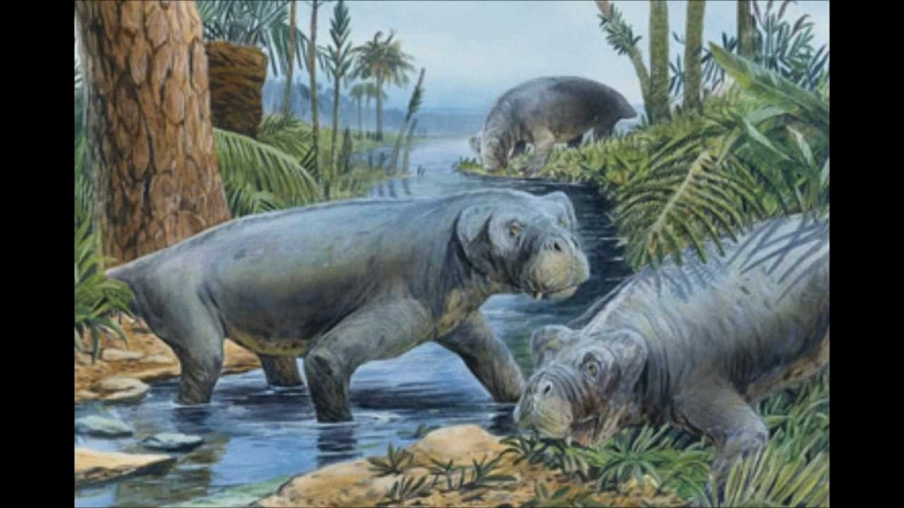
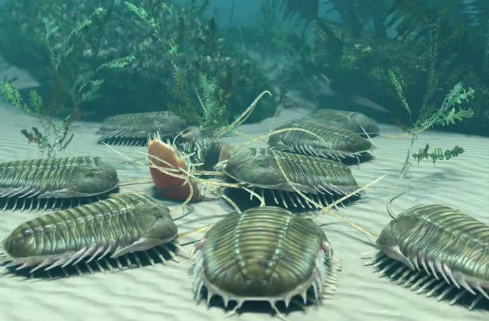
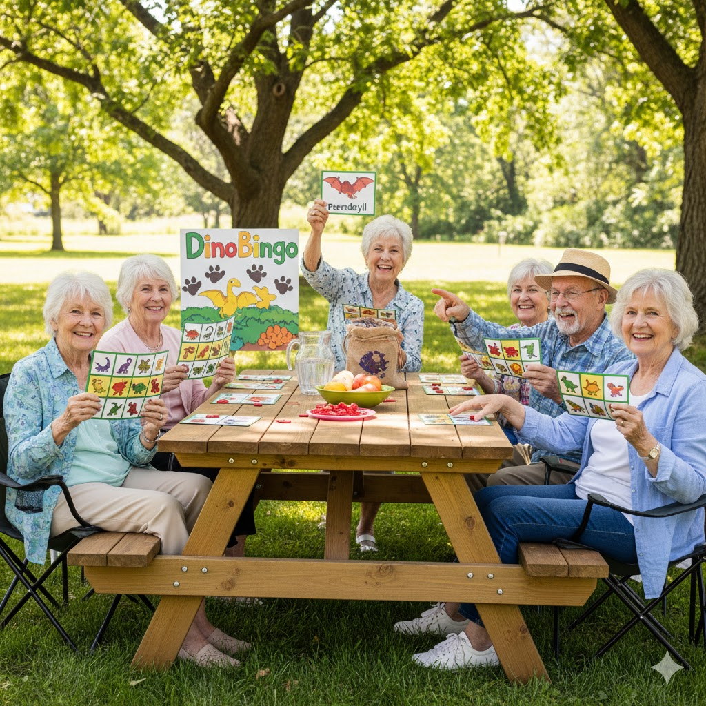
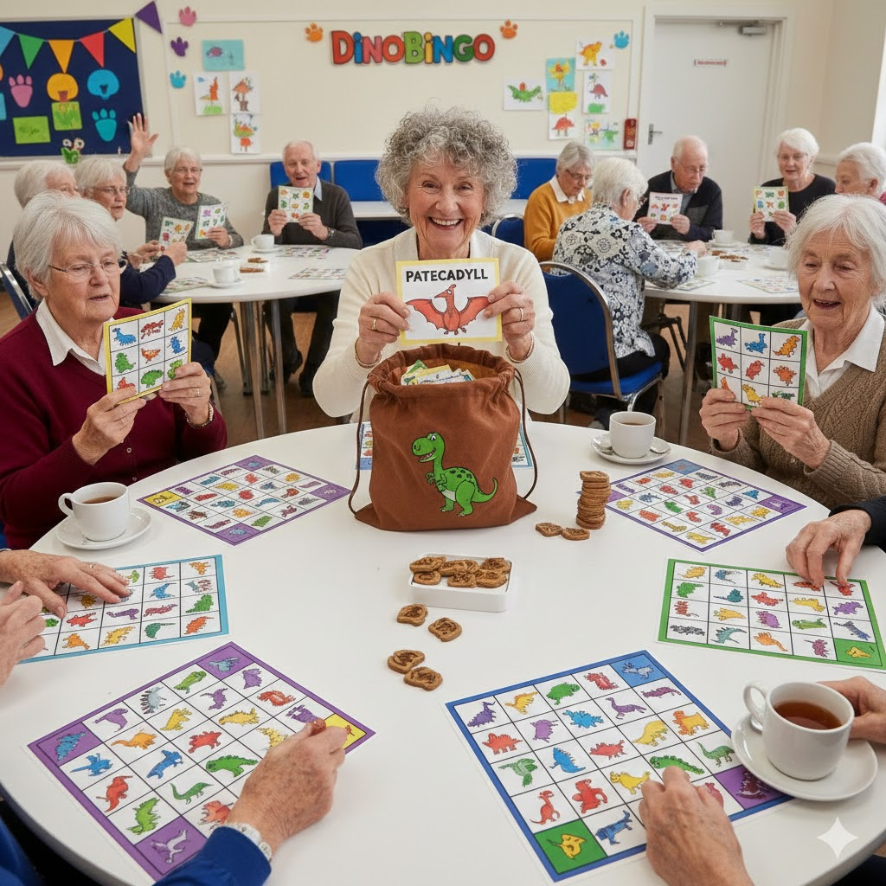

O mais recente trilho inaugurado em março de 2023, com uma tematização única e exclusiva, diferente dos restantes percursos. O Dino Parque Lourinhã apresenta o trilho da Idade do Gelo que passa a exibir 14 novos modelos à escala real, ao longo de 500 metros, destacando-se os Mamutes e os Tigres de Dentes de Sabre.

Vida Marinha Primordial

Artrópodes Gigantes

Primeiros Anfíbios
Sabia que carimbar pode ser uma forma de meditação? Nesta dinâmica, trabalhamos a motricidade fina de forma leve e divertida. Ao posicionar cada bloco para formar o seu iglô, exercita a precisão e o foco num ambiente tranquilo. É uma atividade estimulante para as mãos e relaxante para a mente. Venha sentir a satisfação de ver o seu abrigo glaciar ganhar forma, peça a peça, no papel!

